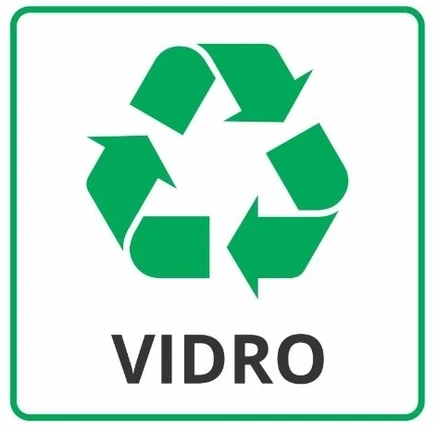
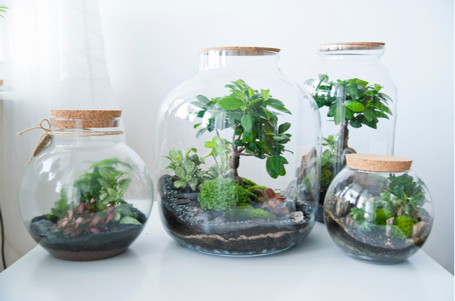

Esse site faz parte de um projeto escolar! cuja finalidade é
incentivar e também mostrar como e quais materiais
podem ou não serem reutilizados/reciclados.
Reconhecendo a importância da conscientização ambiental, buscamos fornecer informações claras e acessíveis para que todas as
pessoas possam tomar decisões informadas sobre o descarte correto de
resíduos e contribuir com a preservação do meio ambiente.
Materiais Que Podem Ser Reciclados:
Nem todos os materiais podem ser reciclados, mas neste primeiro
momento iremos ver quais podem e devem ser
reciclados. Abaixo segue a lista desses materiais:
Azul - Papel e
Papelão
Vermelho
- Plástico
Verde - Vidro
Amarelo - Metais
Marrom
- Resíduos Orgânicos
Preto - Madeira
Como Podemos Reciclar o Vidro?
O processo de reciclagem do vidro envolve etapas como coleta, triagem, limpeza, trituração, fundição, resfriamento, acabamento e distribuição. Primeiramente, o vidro usado é coletado e separado de outros materiais indesejados. Em seguida, passa por uma triagem e limpeza para remover contaminantes. Depois, o vidro é triturado em cacos e fundido a altas temperaturas para moldagem em novos produtos. Após o resfriamento e acabamento, os produtos de vidro reciclado são distribuídos para fabricantes que os utilizam para produzir novos itens. A reciclagem do vidro é um processo eficiente, pois o vidro é 100% reciclável, reduzindo a necessidade de extrair e fabricar novo vidro e contribuindo para a preservação do meio ambiente.

A reciclagem do vidro é de extrema importância devido a vários motivos. Primeiro, ela contribui para a conservação dos recursos naturais, evitando a extração de matérias-primas como areia, soda cáustica e calcário. Isso reduz a degradação ambiental relacionada à extração desses recursos. Além disso, a reciclagem do vidro economiza energia, já que a fusão do vidro reciclado requer temperaturas mais baixas em comparação com a produção a partir de matérias-primas virgens, resultando em menos emissões de gases de efeito estufa. Por fim, a reciclagem do vidro ajuda a reduzir a quantidade de resíduos enviados para aterros sanitários, diminuindo a poluição do solo e da água e contribuindo para a economia circular e a sustentabilidade ambiental.
Tempo de Decomposição do Vidro:
O vidro é um material inorgânico e não biodegradável, o que significa que não se decompõe naturalmente ao longo do tempo. O tempo de decomposição do vidro pode levar centenas ou até mesmo milhares de anos. Em condições ideais, como em aterros sanitários, o vidro pode permanecer praticamente intacto por um período indefinido.
A razão pela qual o vidro leva tanto tempo para se decompor é porque é composto principalmente de sílica, um tipo de mineral encontrado abundantemente na natureza. A sílica é quimicamente estável e não sofre processos biológicos de decomposição. Isso faz com que o vidro seja altamente resistente à degradação e se mantenha praticamente inalterado ao longo do tempo.
Embora o vidro não se decomponha naturalmente, ele pode ser reciclado e reutilizado. A reciclagem do vidro é uma opção ambientalmente amigável, pois reduz a necessidade de extração de matéria-prima virgem, economiza energia e recursos naturais. O vidro reciclado pode ser derretido e transformado em novos produtos de vidro, sem perder suas propriedades originais. Portanto, a reciclagem é a maneira mais eficaz de lidar com os resíduos de vidro e reduzir seu impacto no meio ambiente.
Como Podemos Reutilizar o Vidro?
O vidro pode ser reutilizado de várias maneiras criativas, estendendo sua vida útil. Uma opção é utilizar frascos de vidro como recipientes de armazenamento, ideais para guardar alimentos, especiarias ou pequenos objetos. Além disso, garrafas e potes de vidro podem se transformar em belos elementos decorativos, seja pintando-os ou utilizando-os como vasos de flores ou porta-velas. Outra forma de reutilização é o uso de pequenos frascos de vidro como embalagens originais para presentes, permitindo personalização e tornando o presente ainda mais especial. Copos, taças e potes de vidro podem substituir copos descartáveis e também ser reutilizados para a preparação de alimentos caseiros. O vidro também pode ser aproveitado em projetos de arte e artesanato, como mosaicos, vitrais e bijuterias, oferecendo uma oportunidade para expressão criativa. Por fim, doar itens de vidro em bom estado para organizações de caridade, escolas ou grupos comunitários é uma forma de reutilização consciente e solidária. Ao reutilizar o vidro, estamos reduzindo a demanda por novos produtos, contribuindo para a redução de resíduos e promovendo a sustentabilidade.

Vídeo mostrando como funciona a reciclagem do vidro: